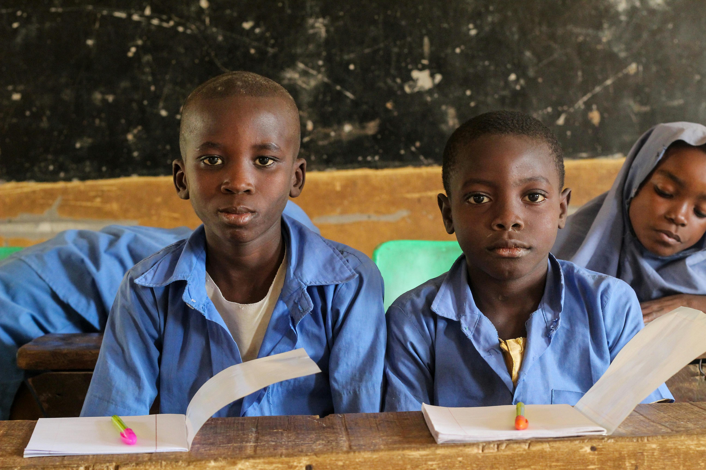
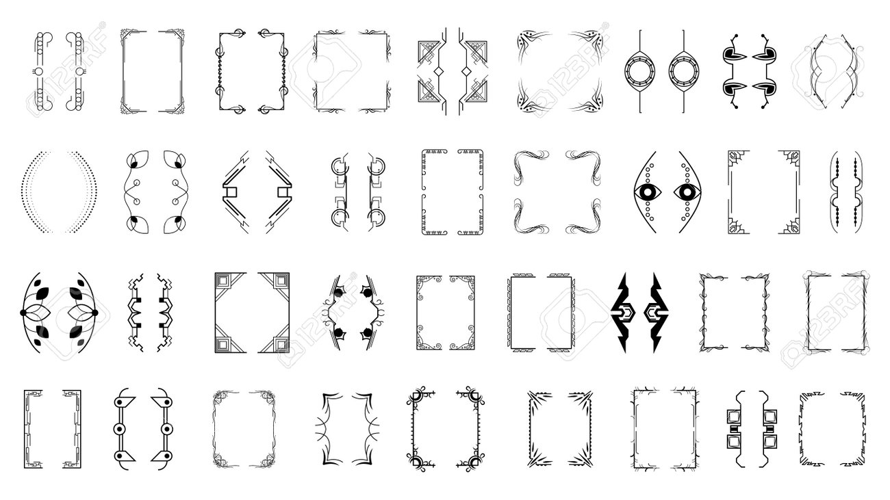
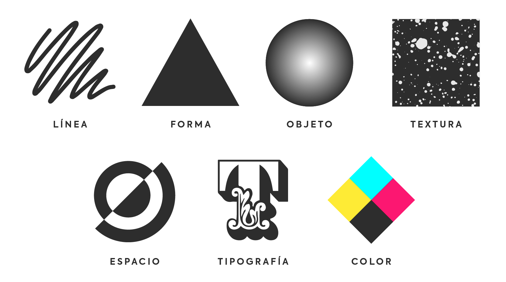
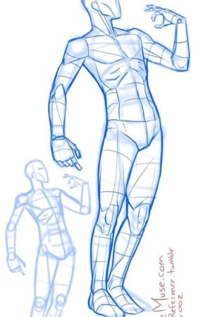
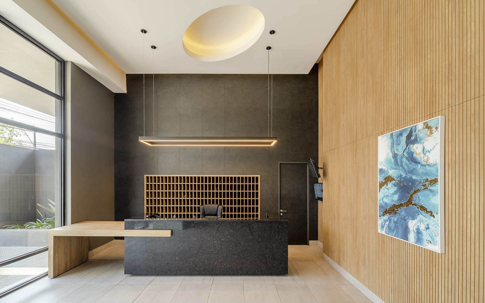

Unidad 4: Diseño y difusión
En esta unidad vas a trabajar el diseño como una forma directa de comunicar ideas a otras personas. No se trata solo de que algo se vea bien, sino de pensar qué quieres decir, a quién va dirigido y qué efecto puede tener en la comunidad. A través de distintos medios y materialidades, crearás piezas de diseño con mensajes claros, responsables y conectados con el entorno.
Aquí el diseño se entiende como una herramienta social. Cada elección visual tiene un impacto, y aprender a reconocerlo es parte central del trabajo.
¿De qué trata esta unidad?

La unidad propone explorar el diseño como un medio para informar, sensibilizar y generar cambios a pequeña escala. A partir del diseño gráfico, visual y digital, desarrollarás piezas que respondan a necesidades reales de comunicación dentro de la comunidad escolar o local.
¿Alguna vez te detuviste a pensar por qué un afiche llama tu atención y otro pasa desapercibido? Esa pregunta atraviesa toda la unidad.
Diseño y comunicación visual

El diseño comunica incluso antes de que alguien lea un texto. Colores, tipografías, imágenes y composición influyen en cómo se interpreta un mensaje. En esta unidad aprenderás a tomar decisiones visuales con intención, entendiendo que nada está puesto al azar.
Se trabajará la claridad del mensaje, la coherencia visual y el sentido comunicativo, buscando que lo que se quiere decir llegue de forma comprensible al público.
Medios y materialidades

Durante la unidad trabajarás con distintos soportes y formatos, como:
- Afiches y carteles
- Volantes y dípticos
- Señaléticas
- Diseño digital y contenido para redes sociales
- Murales y soportes físicos
- Materiales reciclados y alternativas no convencionales
Explorar distintas materialidades permite descubrir nuevas maneras de comunicar y adaptarse a distintos contextos.
Desarrollo de piezas de diseño

El centro de la unidad es la creación de piezas de diseño. Podrás trabajar de forma individual o en grupo, siguiendo un proceso que incluye investigar el tema, planificar, hacer bocetos, producir la pieza y pensar cómo se va a difundir.
Se pondrá atención en la relación entre el mensaje, el formato elegido y el público al que está dirigido. Un buen diseño no grita, se entiende.
Difusión en la comunidad

Diseñar no termina cuando la pieza está lista. También importa dónde y cómo se comparte. En esta unidad reflexionarás sobre los espacios físicos y digitales donde puede circular tu trabajo y sobre el efecto que puede generar en otras personas.
¿Dónde tendría más sentido mostrar tu diseño? ¿En un muro, en un pasillo, en redes? Elegir bien también comunica.
Mirada crítica y ética
A lo largo de la unidad se promoverá una reflexión crítica frente al diseño y sus mensajes. Analizarás el uso de imágenes, textos y símbolos, pensando en la responsabilidad que implica comunicar información a otros.
No todo mensaje es inocente, y reconocer eso ayuda a crear con mayor conciencia y respeto.
Aprendizajes Basales
Los Aprendizajes Basales corresponden a los objetivos fundamentales del nivel. Permiten desarrollar habilidades de creación, análisis y comunicación visual a través del diseño.
Aprendizajes Complementarios
Los Aprendizajes Complementarios profundizan lo trabajado en la unidad mediante el uso de tecnologías digitales, el trabajo colaborativo y la conexión con otras áreas del conocimiento.
Aprendizajes Transversales (OAT)
Durante la unidad se integran aprendizajes relacionados con la convivencia, el bienestar, la salud mental y la formación ética. El trabajo de diseño invita a colaborar, respetar distintas miradas y asumir responsabilidad social al comunicar.
Evaluación
La evaluación considera tanto el proceso como el resultado final. Se tendrá en cuenta la participación, la creatividad, la claridad del mensaje, el uso consciente de medios y materialidades, y la forma en que se realiza la difusión.